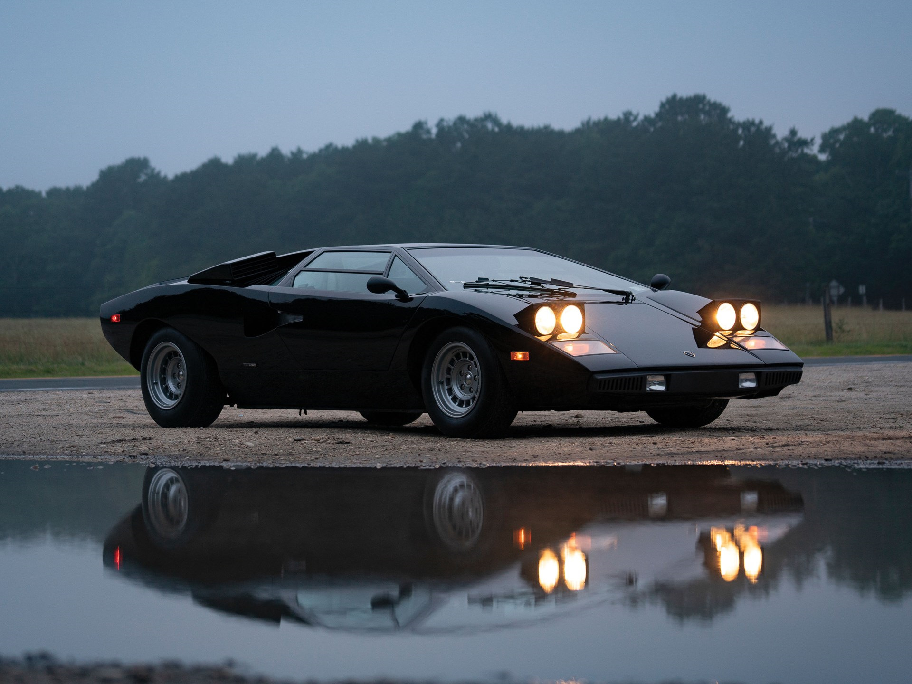
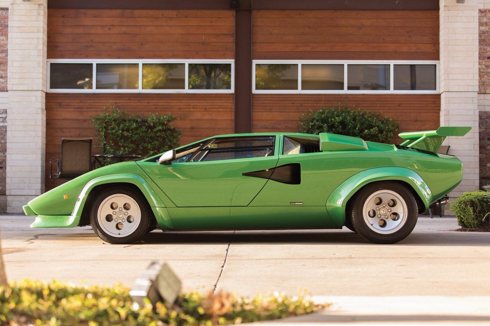
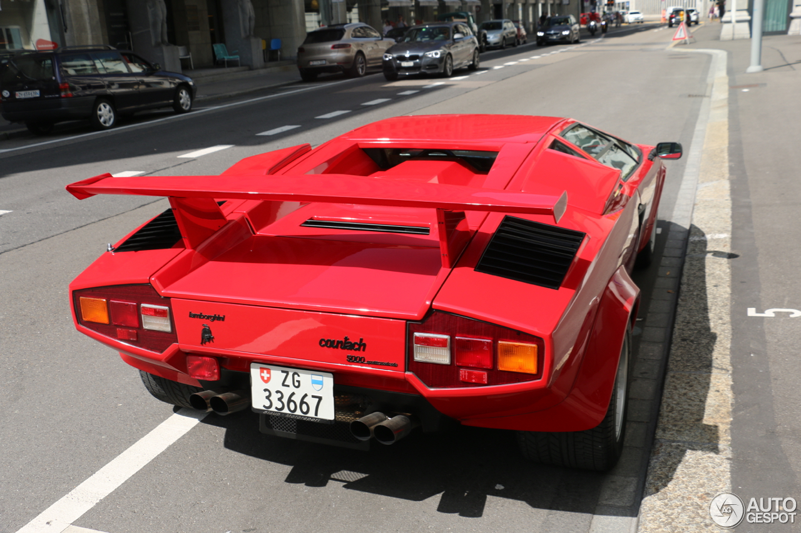
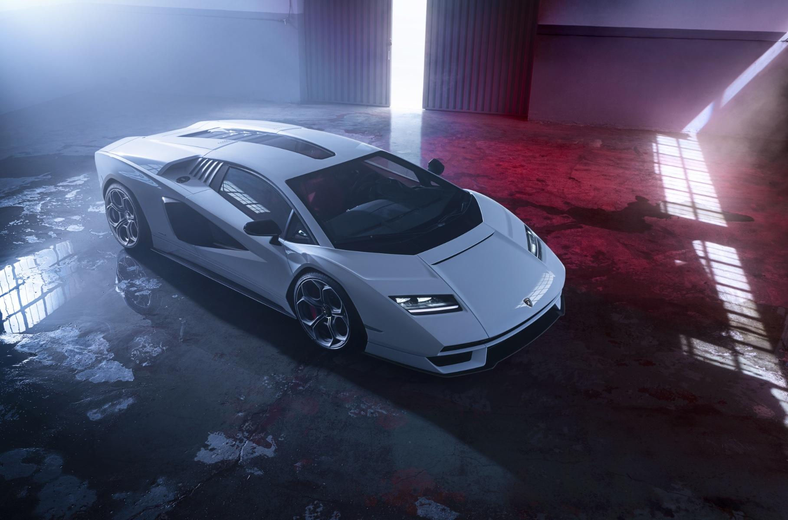

| ГЛАВНАЯ | ИНФО |
Звук запуска:
Lamborghini Countach – итальянский суперкар, выпускавшийся компанией Lamborgini c 1974 по 1990 год.
Слово countach — удивлённый возглас, использующийся мужчинами при виде очень красивой женщины на пьемонтском диалекте итальянского языка.
И ведь это не удивительно – ведь дизайн этого автомобиля разрабатывал Марчелло Гандини. Именно он и задал ту эпоху, к которой предлежит Countach – эпоха клиновидного дизайна. Сам автомобиль по форме получился угловатым, широким и низким. Фактически корпус состоял из множества трапециевидных плоскостей. Хотя в автомобиле и присутствовали плавные линии, они не смягчали внешней угловатости. Несмотря на обтекаемую форму – автомобиль не отличался высокими показателями аэродинамических характеристик.
Модельный ряд начинался с LP400 - первый серийный автомобиль стал доступен для покупателей с 1974 по 1978 год. Двигатель – 4-х литровый атмосферный V12 на 375 л.с. Разгон до сотни составлял – 5.5 секунд, что весьма резво, а предельная скорость 316 км/ч.
С версии LP400S от 1978 года автомобиль оснащался V-образное антикрыло, которое улучшало управляемость на высоких скоростях, однако из-за увеличения веса уменьшало максимальную скорость примерно на 15 км/ч. В добавок штатные шины стали более широкими.
Пик формы Countach достиг в 1985 году – в версии 5000QV. Силовая установка была серьезна доработана и переделана. Теперь сердцем автомобиля выступал 5.2 литровый V12 с 4мя клапанами на цилиндр (от сюда и аббревиатура QV - quattrovalvole) на 455 л.с. Теперь до сотни итальянский бык ехал за 4.8 секунд.
В 1988 году к 25-летнему юбилею компании была выпущена новая модификация Countach. С технической стороны она практически не отличается от 5000QV, основные отличия были сделаны во внешнем виде. В 1990 году модельный ряд Countach завершил свой производственный цикл. Или нет?
В 2021 году спустя целых 50 лет компания Lamborghini анонсировала возрожденный Countach LPI 800-4. В нем узнаются черты оригинального Countach, но теперь автомобиль куда технологичнее. Сердцем автомобиля выступает гибридная установка, в основе которой лежит 6.5 литровый V12 на 814 сил. Разгон до 60 миль – 2.8 секунд, а предельная скорость 355 км/ч.